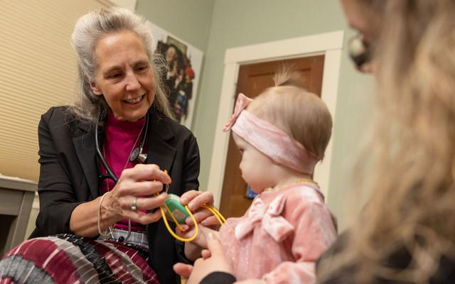

The Maine Monitor ÃÂâÃÂÃÂÃÂàJan 2026
Her labor turned dangerous. The closest hospital had just stopped delivering babies.
When the nearest hospital stopped delivering babies, one Maine mother's routine birth became a high-stakes drive against the clock ÃÂâÃÂÃÂÃÂàa firsthand look at the human cost of rural maternity care closures.
Read Story ÃÂâÃÂÃÂÃÂÃÂ